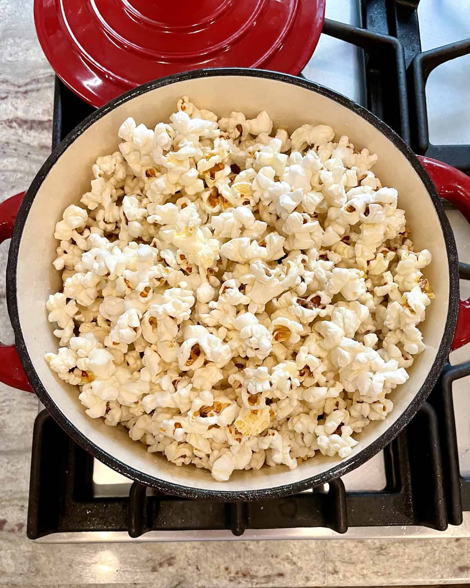

Stovetop Popcorn

Description
A healthier alternative to the microwavable popcorn bags!
All you need is a few ingredients for such a light, airy, and crunchy snack.
Ingredients
- popcorn kernals
- oil
- salt *optional
- melted butter *optional
Steps
- bring a heavy bottom pot over a medium high heat
- pour a thin layer of oil onto the bottom
- place 3 test kernals into pot
- wait for all 3 kernals to pop before adding enough kernals to barely cover the bottom
- remove the pot from the heat source for 30 seconds
- this allows all the kernals to come to the the same temperature to pop evenly.
No burnt popcorn or unpopped kernals!!
- after the 30 seconds, place back on heat source and cover with lid
- once more kernals start popping, gently move the pot back and forth over the heat source for
even popping
- when the popping stops, turn off heat and enjoy!!
- Optional: Drizzle melted butter and sprinkle salt over warm popcorn to taste